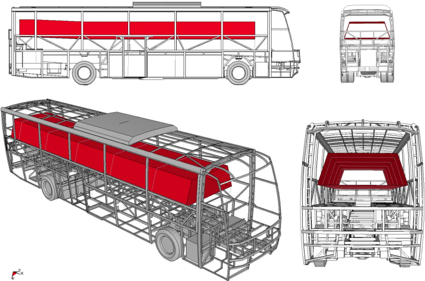
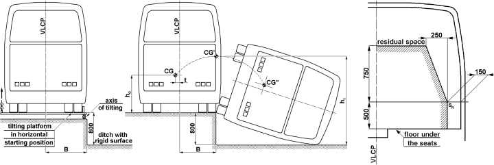
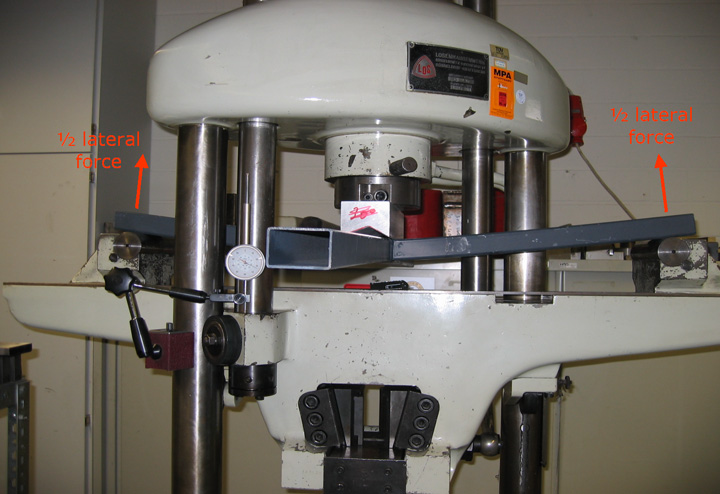
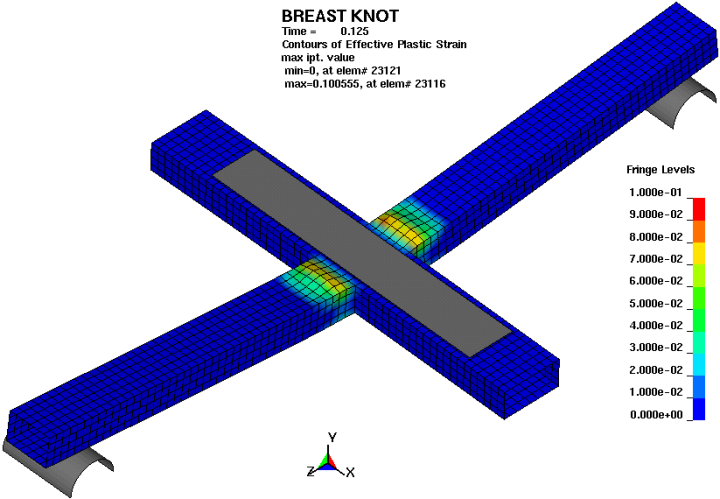
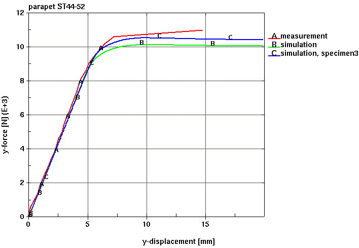

|
Kadir Elitok, Dr. M. Ali Güler, Fatih Han Avcý
Ürün Geliþtirme Bölümü., TEMSA A.Þ., Adana
Dr. Ulrich Stelzmann
LS-DYNA Services, CADFEM GmbH, Almanya
Not: Ýlk defa TurkCADCAM.net Dergisi 1. sayýsýnda (Ocak-Þubat 2006) yer alan bu makale, Kasým 2008'de TurkCADCAM.net Portalý'nda yayýnlanmaya baþlamýþtýr.
Özet
Devrilme kazasý, otobüs içerisindeki yolcular ve mürettebatýn güvenliðini tehdit eden en ciddi tehlikelerden bir tanesidir. Geçmiþ yýllarda yapýlan gözlemler, kaza sonrasýnda deforme olan otobüs gövdesinin yolcularýn hayatýný ciddi biçimde tehdit ettiðini göstermiþ, böylece devrilme mukavemeti otobüs üreticileri için üzerinde dikkatle durulmasý gereken bir husus haline gelmiþtir. Günümüz itibari ile, bir Avrupa yönetmeliði olan "ECE-R66" sayesindedir ki bu tür devrilme kazalarýnýn yol açabileceði felakete varan sonuçlar engellenebilmekte ve otobüs yolcularýnýn güvenliði temin edilmektedir. Söz konusu yönetmeliðe göre bu konudaki sertifikasyon, ya aracýn birebir devrilme testi ile ya da ileri nümerik metodlara dayanan hesaplama tekniklerini (örneðin: doðrusal olmayan eksplisit dinamik sonlu elemanlar analizi) kullanarak alýnabilmektedir. Her iki metodun da nihai amacý otobüs üzerinde oluþan eðilme deformasyonunu tetkik ederek yolcu yaþam mahaline herhangi bir giriþimin olup olmayacaðýný tespit etmektir.
Bu çalýþmada, TEMSA HD SAFARI otobüsünün ECE-R66 analizleri ve sertifikasyon süreci irdelenmiþtir. Otobüs devrilme analizleri esnasýnda, çözücü olarak doðrusal olmayan eksplisit dinamik kod LS-DYNA, sonlu elemanlar ön iþlemcisi olarak da ANSA programý kullanýlmýþtýr. Projenin ilk aþamasýnda, ECE-R66 yönetmeliðinin bir zorunluluðu olarak, yapýlacak hesaplamalarýn fiili testle örtüþmesini kontrol eden "Hesap Yönteminin Doðruluðu" adý altýnda bir doðrulama çalýþmasý yapýlmýþtýr. Bu doðrulama çalýþmasý yönetmeliðin gerektirdiði zorunlu bir önkoþuldur. Zira sonlu elemanlar analizlerinde kullanýlacak varsayýmlarý teyit etmek, analizleri teftiþ edecek olan teknik otoritenin (Bu durumda TÜV Süddeutschland) sorumluluðunda olmaktadýr.
Anahtar Kelimeler: Devrilme, çarpma dayanýklýlýðý, ECE-R66, yaþam mahali, eksplisit dinamik, LS-DYNA
Giriþ
Günümüze dek yapýlan yayýnlara [1, 2] göre yaralanma ve can kayýplarýnýn görüldüðü otobüs ve midibüs kazalarýnýn hemen hemen hepsinde devrilmenin de ciddi bir unsur olarak gerçekleþtiði kaydedilmiþtir. Avrupa'daki otobüs ve midibüs kazalarý incelendiðinde:
En az bir aðýr yaralanmayla ya da ölümle sonuçlanan 47 gerçek otobüs-midibüs kazasýnýn incelenmesi sonucunda kazalarýn %42'sinde yana veya öne devrilme gerçekleþtiði tespit edilmiþtir [3]. Bunun üzerine otobüs devrilmelerindeki yaralanma olaylarýnýn iþleyiþi daha etraflýca incelenmiþtir [4]. Devrilme kazalarýnda otobüs içerisindeki insanlarýn %19'u ölmekle birlikte, en yüksek ölüm oranlarý sabit bariyer üzerinden devrilmelerde %30'luk bir ÖAY (Ölü ya da Aðýr Yaralý) oraný ile ortaya çýkmaktadýr. Ancak devrilmede sabit bir bariyer rol oynamýyor ise ÖAY oraný %14 seviyelerine düþmektedir. Ayrýca eðer otobüs çift katlý ise ÖAY'nin %80'inden fazlasýnýn otobüsün üst katýnda gerçekleþtiði gözlemlenmiþtir. En aðýr hasarlar ise otobüsün devrilme sonrasýnda toprak üzerinde kaymasý esnasýnda gerçekleþmektedir. Ýspanyol yetkililerden alýnan bilgilere göre 1995-1999 yýllarý arasýnda yol ve otoyollarda gerçekleþen otobüs kazalarýnýn %4'ü devrilme olmakla birlikte, devrilme kazalarýndaki ölüm riskinin diðer kazalara kýyasla 5 kat fazla olduðu belirtilmiþtir [5]. Almanya'da gerçekleþen 48 tur otobüsü kazasýnýnýn 8'inin devrilme kazasý olduðu kaydedilmiþ olup, tüm aðýr yaralanmalarýn %50'si ve ölümlerin %90'ý bu 8 devrilme kazasýnda gerçekleþmiþtir [6].
Devrilme esnasýnda yolcularýn araçtan fýrlama, sarkma ve yabancý cisimlerin tecavüzüne maruz kalmalarý riski daha yüksek olduðu için ölüm riski de bir o kadar artmaktadýr [7]. Herhangi bir otobüs-minibüs yolcusu ile daha hafif bir araç yolcusu arasýndaki fark, devrilmelerdeki biyomekanik prensipler ve yaþam alaný kriterleri gözönüne alýndýðýnda daha bariz þekilde ortaya çýkmaktadýr. Bir otobüs veya midibüs devrilmesinde, bir otomobil yolcusuna kýyasla otobüs yolcusu, aracýn dönme merkezine çok daha uzak bir konumda bulunmaktadýr. Bu sebeplerden dolayý, "Yolcu Taþýyan Araçlarýn Yapýsal Mukavemeti" baþlýklý "ECE-R66" yönetmeliði, devrilme kazalarýnda ortaya çýkabilecek feci sonuçlarý önlemek ve otobüs-midibüs yolcularýnýn güvenliðini korumak amacý ile yürürlüktedir [8]. Otobüs devrilmesi problemi, kapsamlý bir sonlu elemanlar programý kullanýlarak bilgisayar ortamýnda analiz edildiðinde deneyler ile simülasyonlar arasýnda uyum olduðu araþtýrmacýlar [9-11] tarafýndan gösterilmiþtir.
Bu çalýþmada, "HD SAFARI" isimli TEMSA otobüsünün ECE-R66 hesaplama prosedürlerinin nasýl gerçekleþtirildiði anlatýlmaktadýr. HD SAFARI, 12.8 metre uzunluðunda, ön ve en arka tarafý "Roll-Bar" adý verilen özel tasarýmlarla güçlendirilmiþ bir araçtýr. Sonlu elemanlar modelinin oluþturulmasý özelleþmiþ ön iþlemci yazýlýmý olan ANSA 11.3.5; doðrusal olmayan, eksplisit ve 3 boyutlu dinamik analiz hesaplamalarý ise LS-DYNA aracýlýðý ile gerçekleþtirilmiþtir. Hesaplama tekniðinin doðruluðu, araç yan duvarýndan ve tavandan alýnan numuneler üzerine yapýlan testler ve bu testlerin akabinde yapýlan simülasyonlarýn birbirleri ile kýyaslanmasý sayesinde kontrol edilmiþtir. Bu kýyaslamalardan elde edilen yüksek teorik ve deneysel korelasyon, bilgisayar ortamýnda yapýlan hesaplama yönteminin meþruluðunu göstermektedir. Komponent bazýnda yapýlan bu doðrulama prosedüründen sonra komple araç modeli hazýrlanmýþ ve simülasyonlarý geçekleþtirilmiþtir. Yaþam mahali gözönünde bulundurulmak üzere deformasyon miktarlarý tespit edilerek aracýn regülasyonu saðladýðý tespit edilmiþtir.
1. ECE R66 Yönetmeliði
ECE-R66 yönetmeliðinin amacý, araç yapýsýnýn, yaþam mahalinin devrilme testi süresince ve sonrasýnda zarar görmemiþ olarak kalmasýný saðlayacak kadar mukavemete sahip olduðunu garanti etmektir. Bu, aracýn testin baþýnda yaþam mahalinin dýþýnda bulunan hiçbir parçasýnýn (Kiriþ ve kolonlar, bagaj raflarý, vs.) yaþam mahaline girmemesi anlamýna gelir. Testte, belirli miktarda enerji aracýn yapýsýna empoze edilmektedir.
Aracýn yaþam mahali, Þekil 1'de görülen dýþ kenarlara sahip düþey enine bir yüzey yaratýlmasý ve bu yüzeyin tüm otobüs boyunca taranmasýyla tanýmlanmaktadýr.
Devrilme testi, özellikleri aþaðýda belirtilen bir yan yatýrma testidir (Þekil 2).
Gerçek boyutlardaki araç duraðan haldeyken yavaþça, kararsýz denge konumuna doðru yana yatýrýlmaktadýr. Devrilme testi, bu kararsýz denge konumunda, tekerlek-yer deðme noktalarýndan geçen dönme eksenine göre sýfýr açýsal hýz ile baþlar. Bu esnada araç referans enerji ile karakterize edilir. Araç yatay, kuru ve prüzsüz bir beton yer yüzeyine sahip, 800 mm derinliðinde bir hendeðe devrilir.

Þekil 1. Yaþam Mahali

Þekil 2. Devrilme testi
Devrilme testi, aracýn yaþam mahali açýsýndan daha tehlikeli olan kýsmý üzerinde gerçekleþtirilmelidir. Hangi tarafýn daha tehlikeli olduðu kararý yetkili teknik servis tarafýndan, üreticinin önerisi temel alýnarak, en azýndan aþaðýdakiler göz önünde bulundurularak alýnýr:
Aðýrlýk merkezinin merkez kaçýklýðý ve bunun aracýn kararsýz baþlangýç konumunda potansiyel enerji üzerindeki etkisi; kalýcý alanýn simetrik olmamasý; aracýn iki yanýnýn farklý, asimetrik yapýsal özellikleri; hangi tarafýn daha güçlü ve iç parçalar (dolap, tuvalet, mutfak) tarafýndan daha çok desteklenmiþ olduðu.
1.1.1 Hesaplamalarýn Doðrulanmasý
ECE R66 simülasyon ve sertifikasyon sürecine baþlamadan önce, ECE R66 yönetmeliði tarafýndan konulmuþ bir hesaplamalarýn doðrulanmasý iþlemi gerçekleþtirilmiþtir. Ýki ayrý numune hazýrlanarak (Yan-duvar düðümü ve tavan kenar düðümü) deneysel incelemeler için TÜV Automotive'e gönderilmiþtir. Bu parçalar üzerine TÜV'ün deney tesislerinde belirli sýnýr koþullarý ve yarý-statik yükler uygulanmýþtýr (Þekil 3). Ayný deney senaryolarý LS-DYNA kullanýlarak simüle edilmiþtir. Hem deney hem de LS-DYNA simülasyonu için kuvvet-defleksiyon grafikleri karþýlaþtýrýlmýþ ve deney ve simülasyon sonuçlarý arasýnda iyi bir uyuþma olduðu görülmüþtür (Þekil 4).

Þekil 3. Yan-duvar düðümüne yük uygulayan deney düzeneði.

Þekil 4. Yan-duvar düðümüne uygulanan deney ve simülasyon sonuçlarý yüksek düzeyde benzerlik göstermektedir.

|